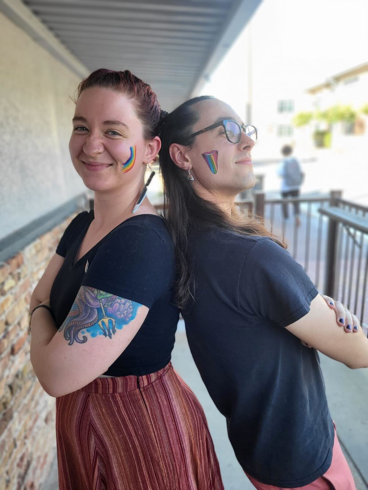
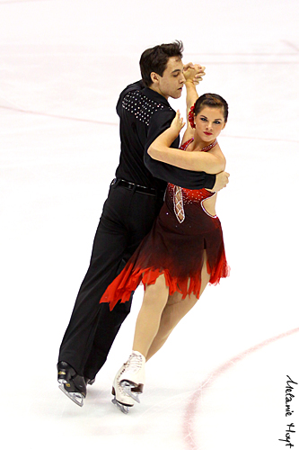

About Me
Hi, I'm Jonathan! I'm an astrophyscist working at Dartmouth College with Ryan Hickox. Outside of astronomy, I am a lapsed violinist and former figure skater. Read on to learn more about me!
Gender and sexualityTaylor Hutchison (left) and Jonathan (right) at a Pride event in College Station, TX, in 2022.
I identify as agender, genderfluid, genderqueer, and broadly as non-binary. For me, this just means not fitting into the binary of "male" or "female." The idea of gender being a perfect binary is a
In addition to gender, sex and sexuality also exist as spectra, rather than binaries. I identify as being somewhere on the spectrum of pansexual.
It took a while for me to understand my gender identity and sexuality, and I'm still learning! It's important for me to be open about my identity, especially since I have encountered very few openly gender-diverse people in positions of power in academia. I hope to show other young queer scientists that they can succeed in astronomy, too.
Violin
Music has always been very important to me. I took lessons in the Suzuki method from ages 3-15, performing in violin school concerts, public school orchestras, and a Saint Louis youth orchestra. I haven't taken lessons since I was 15 years old, but I have practiced sporadaically ever since. My repertoire includes classical music as well as traditional Celtic, American fiddle, and some pop.
Figure skatingKelsey Barnes (right) and Jonathan (left) competing in Tango at the 2009 Lake Placid Ice Dance Championships.
I trained as a figure skater from ages 6-17, competing in local and nationwide competitions. After a knee injury at 13 years old, I stopped competing in freestyle, but continued competing in ice dancing. When I was 14 years old, I moved to a training center for ice dancing in Dallas, TX, living with host families in the greater Dallas area.
I am a U.S. Figure Skating Gold Medalist in Ice Dancing and Moves in the Field, and I competed at the Novice level in ice dancing. After my final figure skating season was shortened due to another injury, I quit skating to focus on starting college as a physics major at The University of Texas at Dallas.
Misc
In my free time, I love reading (mostly fiction, but some nonfiction). Some of my favorite authors right now are RF Kuang, CL Clark, NK Jemisin, Tasha Suri, Clint Smith, Octavia Butler, Ursula K Le Guin, and Indra Das. I'm also an avid writer, including short stories, novels, poetry, and roleplaying games.
I love running around outside, rock climbing, playing tabletop games and RPGs, watching soccer, and listening to all sorts of music.